Data Visualization
Truncated Y-Axis
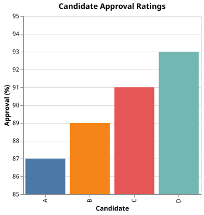
Compare the visual height of candidate A's bar to candidate D's bar. How much larger does D appear? Now look at the actual numbers. How large is the real difference?
Show explanation
The Y-axis starts at 85 instead of 0. Candidate D's approval (93%) is only 6 percentage points above candidate A's (87%), but the bars make it look roughly three times taller. Any bar chart where the Y-axis does not start at zero exaggerates relative differences. The effect is proportional to how far the baseline is raised: the higher the floor, the more dramatic the distortion.
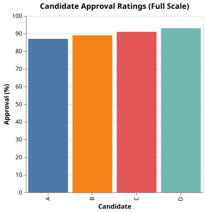
Cherry-Picked Time Window
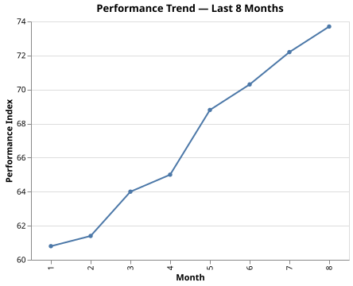
The chart shows a clear upward trend over 8 months. What conclusion might you draw about this product's long-term trajectory? What information would you need to know whether this is reliable?
Show explanation
The 8 months shown are a recovery from a multi-year decline. The full 5-year series falls from 100 to roughly 52 before the recent uptick. Choosing a start date at the bottom of a trough guarantees an upward slope. This pattern is common in financial and performance reporting: selecting the window that flatters the story while omitting the longer context that contradicts it.
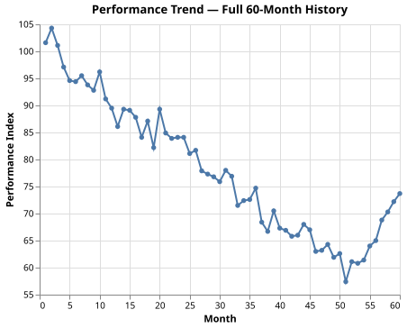
Spurious Correlation via Shared Trend
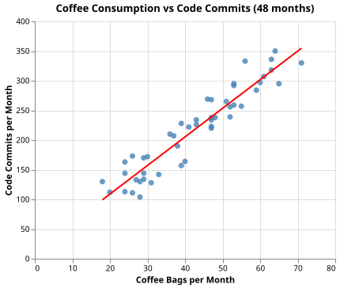
The scatter plot shows a strong positive relationship between monthly coffee consumption and code commits, with a tight regression line. What conclusion might a reader draw? What third factor might explain the pattern?
Show explanation
Both metrics grow because the engineering team grew: more engineers means more commits and more coffee consumed. Plotting two time-trending variables against each other removes the time axis entirely and makes a shared common cause look like a direct relationship between the two variables. Any two series that both trend in the same direction will produce a scatter that looks correlated, regardless of whether they have anything to do with each other.
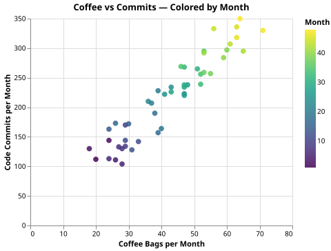
Early months cluster in the lower left and late months in the upper right — the apparent correlation is entirely temporal ordering.
Simpson's Paradox
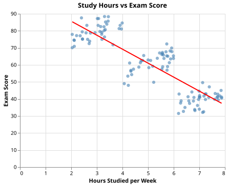
The trend line shows that students who study more tend to score lower. Does that mean studying is counterproductive? What might explain the pattern?
Show explanation
Students in harder courses study more hours but earn lower scores because the courses are harder, not because studying hurts performance. Within each difficulty level the relationship is positive: more study leads to higher scores. The aggregate trend reverses because a third variable — course difficulty — drives both the study hours and the scores. Adding a color encoding for difficulty would reveal three upward slopes instead of one downward one. This is Simpson's Paradox: an aggregate trend that disappears or reverses when a confounding variable is introduced.
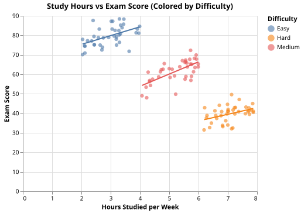
Mean Conceals a Bimodal Distribution
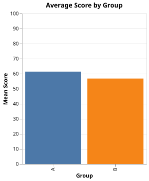
Both groups have nearly the same average score. Would you conclude they are performing similarly? What other chart type would you choose before drawing that conclusion?
Show explanation
Group A is roughly normally distributed around 62. Group B is bimodal: half the students score near 25 and half score near 90. Both groups have the same mean, but their situations are completely different — Group B has two distinct subpopulations that the mean obscures entirely. A strip plot, histogram, or violin chart would make the bimodal structure immediately visible. Reporting only the mean discards the information most relevant to understanding Group B.
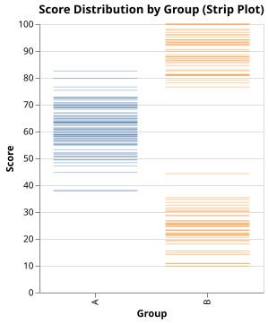
Absolute Counts Instead of Rates
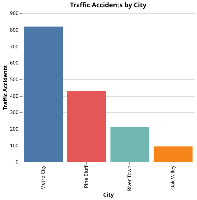
Which city appears to have the most serious traffic safety problem? Now calculate accidents per 100,000 residents for each city using the figures below. Does the ranking change?
Metro City: 820 accidents, population 2,100,000. River Town: 210 accidents, population 180,000. Oak Valley: 95 accidents, population 52,000. Pine Bluff: 430 accidents, population 640,000.
Show explanation
Metro City's raw count is largest, but its rate is 39 per 100,000 — the lowest of the four. Oak Valley has only 95 accidents but a rate of 183 per 100,000 — nearly five times higher. Absolute counts favor larger populations and are only meaningful when comparing groups of similar size. Any comparison that involves groups of different sizes requires a denominator: rate, proportion, or per-capita figure.
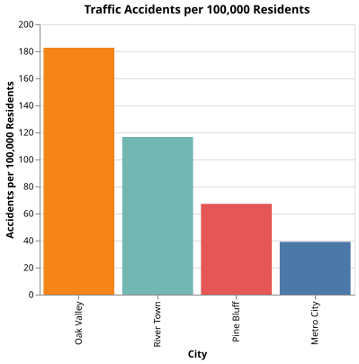
Cumulative Chart Hides a Slowdown
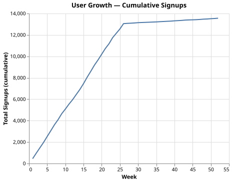
The total user count is rising steadily. Would you describe the product as growing? Now think about what the weekly rate of new signups looks like in the second half of the year compared to the first.
Show explanation
A cumulative chart can only go up or stay flat — it can never show a decline even if new additions stop entirely. Weeks 1–26 add 400–600 users each; weeks 27–52 add 10–30. The product's growth has effectively stopped, but the cumulative line looks like a healthy upward trend throughout. Plotting the weekly rate instead reveals the collapse in new signups. Cumulative charts are useful for showing totals but systematically hide any information about acceleration, deceleration, or stagnation.
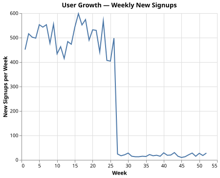
Discrete Overplotting Hides Density
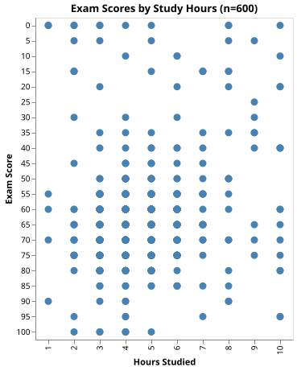
How many students appear to have studied for 4 hours and scored 65? How confident are you that each visible dot represents the same number of students?
Show explanation
Both the exam scores (multiples of 5) and hours studied (integers) are discrete, so many students share the same coordinates. Opaque markers stack on top of each other and become indistinguishable from a single point: a position with 40 students on top of each other looks identical to a position with 1. The chart gives no indication of how populated each cell is, making the data appear uniformly distributed when 80% of students cluster at 3–6 hours and scores of 55–75.
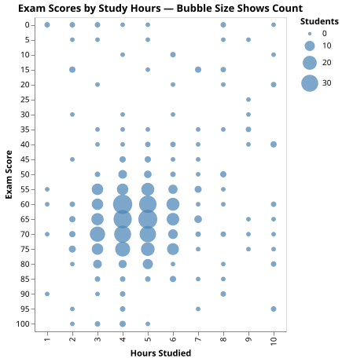
Pie Chart Obscures Ranking
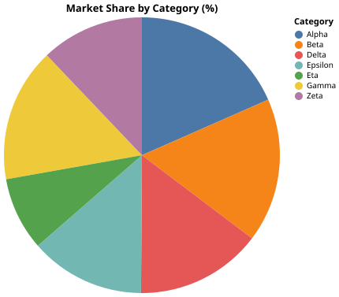
Without reading the exact percentages, rank the seven categories from largest to smallest share. How confident are you in your ranking? Which pairs of adjacent categories are hardest to distinguish?
Show explanation
Human perception of angles and arc lengths is unreliable, especially when slices are similar in size. The shares range from 18.4% down to 8.6% — a meaningful spread — but most readers cannot reliably rank the middle five categories without reading the labels. A horizontal bar chart sorted by value requires only length perception, which humans perform much more accurately. Pie charts are defensible only when there are two or three slices with clearly different sizes.
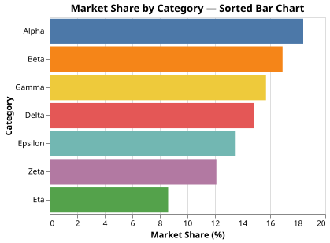
Group Average Does Not Predict Individuals
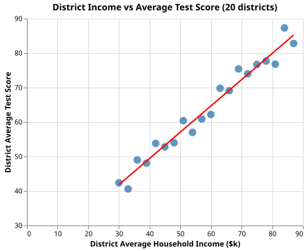
The chart shows that school districts with higher average household income have higher average test scores, with a tight regression line. Would you expect to be able to predict an individual student's score from knowing their district's average income? How accurate do you think that prediction would be?
Show explanation
The district-level chart uses 20 aggregate points, so noise is suppressed and the trend looks precise. But the district average income is a property of the district, not the student. Within any district, students from families with very different incomes sit in the same classrooms and take the same tests, and individual scores scatter widely around the district mean. A statistic that explains 95% of the variance across group averages may explain only 25–30% of the variance across individuals, because most of the individual variance is within-group and invisible in the aggregate chart. Drawing conclusions about individuals from group-level correlations is the ecological fallacy.
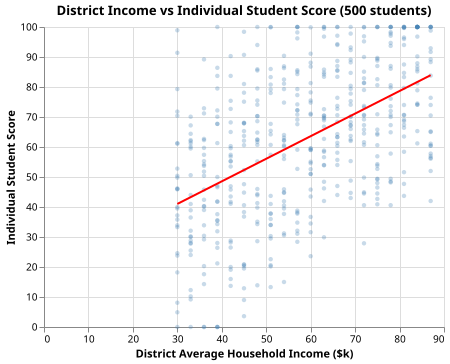
The upward trend is still present but the scatter is so wide that knowing a student's district tells you little about that student's score.